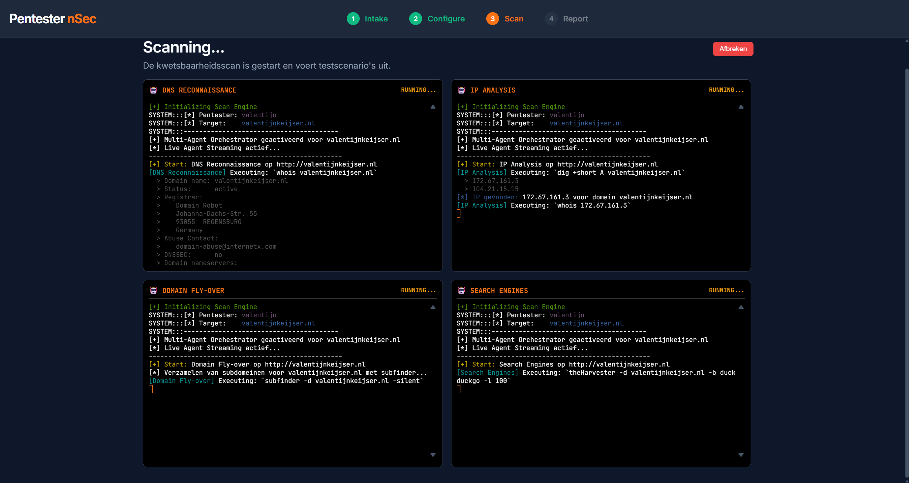
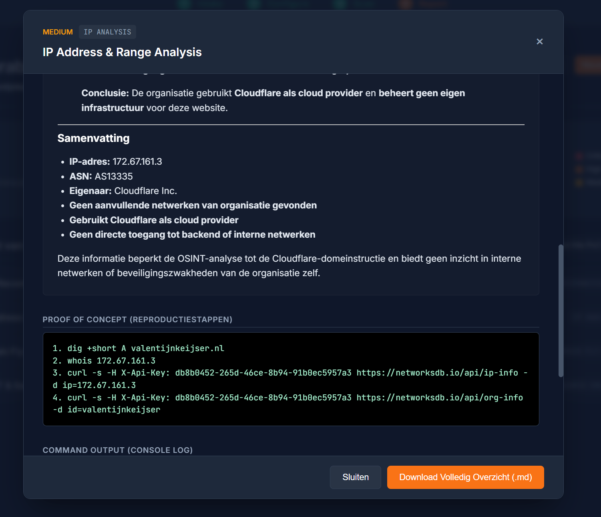

01 / THE CHALLENGE
Less overhead.
More room for analysis.
A comprehensive penetration test involves a lot of manual overhead. Before scanning starts, security engineers parse intake notes to determine the scope, targets, and credentials. Reconnaissance and vulnerability analysis then require switching between tools, interpreting noisy output, and handling failures on large datasets.
I built a platform to coordinate that work, combining established security tools with AI agents that reason about the next steps.
02 / THE WORKFLOW
From intake to investigation.
The workflow starts with a local language model, running through Ollama, that parses raw client intake notes into a structured JSON configuration. This defines target URLs, in-scope paths, and the required authentication flows.
With the scope configured, an asynchronous Python backend coordinates specialized agents for OSINT, DNS reconnaissance, IP analysis, and web vulnerability scanning. The agents run concurrently and stream their output back to the frontend.
- 01
Intake
Turn client notes into a structured scope.
- 02
Reconnaissance
Coordinate specialized discovery agents.
- 03
Analysis
Use AI reasoning to prioritize targets.
- 04
Reporting
Bring findings together in the dashboard.

03 / AGENTS IN PRACTICE
Reconnaissance with reasoning.
The Domain Fly-over Agent is an example of that approach. It collects subdomains with Subfinder and sends the results to the AI model. The model reasons about which targets need attention, such as admin panels and development environments, and adjusts the scanning profile to help prevent tool crashes.
Tools such as Aquatone then provide targeted visual inspection. The agent connects discovery, prioritization, and tool execution in one workflow.
04 / UNDER THE HOOD
Built for concurrent work.
The backend uses FastAPI and Python’s asyncio to run concurrent operating-system tasks. An asynchronous queue streams log output from each agent to the frontend, making the progress of the pentest visible in real time.
The project runs in Docker, using a Kali Linux base image with security tools such as Nmap, Amass, and Aquatone integrated into the Python orchestrator. Local language models through Ollama provide the reasoning layer.

05 / WHAT I BUILT
Security thinking.
Applied through software.
This project brought together asynchronous Python development, local AI integration, Docker and Linux infrastructure, and the workflow of an ethical hacker. It was an opportunity to turn security knowledge into a working multi-agent system.
Explore more projects